Semester 3 · Jury
Rushabh
Mahore
Interaction Design · NID Bengaluru

Why do we fear what we don't understand?The Fear Between Us
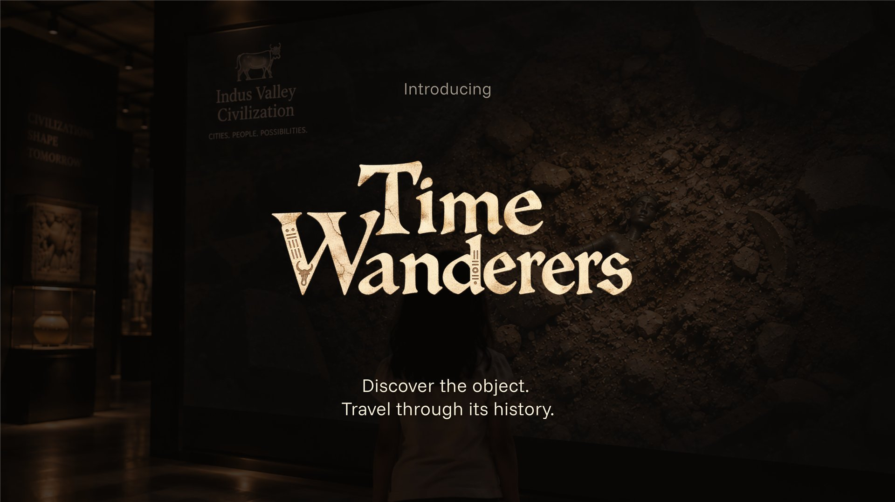
How do children meet history?Time Wanderers

How do you prepare for a place you've never been?Saath
Data storytelling · Interactive scroll story
The Fear Between Us
Understanding beyond fear.
A story told through data, and the lives it leaves uncounted.
The prototype · live
Scroll it with the jury.
The tool we built
Who shares your neighbourhood?
Search any area, city or place, or tap Use my location.
Choose on map to drop a pin anywhere in India.
See the species recorded within 5 km, from 33,408 sightings.
Filter species to find where one snake has been seen.
rushworks.in/projects/snakbite
Learning outcomes
Less fear. More understanding. Room for both.
Data into story. Cleaning open data and venom studies into a narrative with a turn, not a dashboard.
Numbers need a human scale. “Every hour” lands harder than a yearly total.
Interaction makes facts personal. Drawing a card or searching your own street beats reading a table.
Building it end to end. Coded and shipped as a live web prototype.
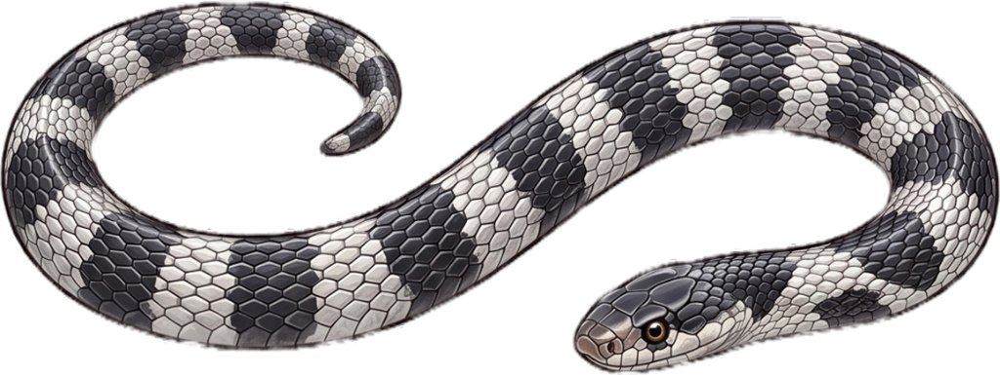
Multimodal Interactions · with Sharvani & Ankit · guided by Prof. Mamata Rao & Prof. Athul Dinesh

Problem
Children meet history as isolated facts.
The gap is not information.
The gap is context.
What children told us
How might we
make learning about civilisations and artifacts more immersive, engaging and contextual for children?
Research says curiosity, conversation and exploration drive museum learning. So: don't replace the teacher or the museum, add an experiential layer.
Time Wanderers
Discover the object. Travel through its history.


Clench to choose · hands apart to zoom · walk to explore · blow to uncover · roll back in time · ask with a mic gesture.
Prototype demo
Watch on YouTube ↗youtube.com/watch?v=Yj909EQGlDs · touchless gestures, clench selection, spatial zoom, artifact interaction, real-time narrative.


Learning outcomes
From mockups to code. We built the flow in VS Code by layering assets, video, audio and interaction.
Natural beats clever. Testing taught us to strip complex inputs back to everyday movements with clear signifiers.
Roles and decisions. Splitting asset creation, flow design and assembly kept a tight timeline; decisions stayed collective.
“Every artifact holds a narrative. Connecting people to those hidden stories turns a museum visit into something special.”
Design Project 2 · Mixed reality · Accessibility
Saath
Practise the airport, before the airport.
Platform
Meta Quest 3 (WebXR) + desktop preview
Journey
11 practice scenes, home to seat 14A
Solo project
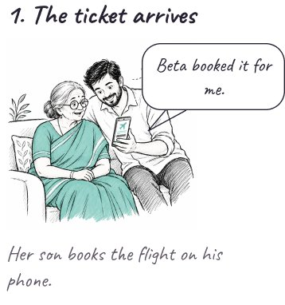
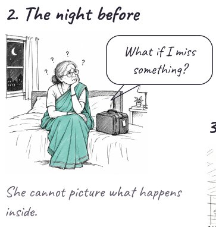


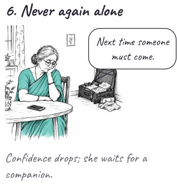
Kamala, 68, flying alone for the first time.
Every unknown step pushes her back towards needing someone with her.
Systems thinking
Three vicious loops
Stress — not knowing what comes next makes every step stressful.
Dependence — asking for help feels like a burden, so they depend on family.
Avoidance — without practice, one bad trip confirms flying is not for them.
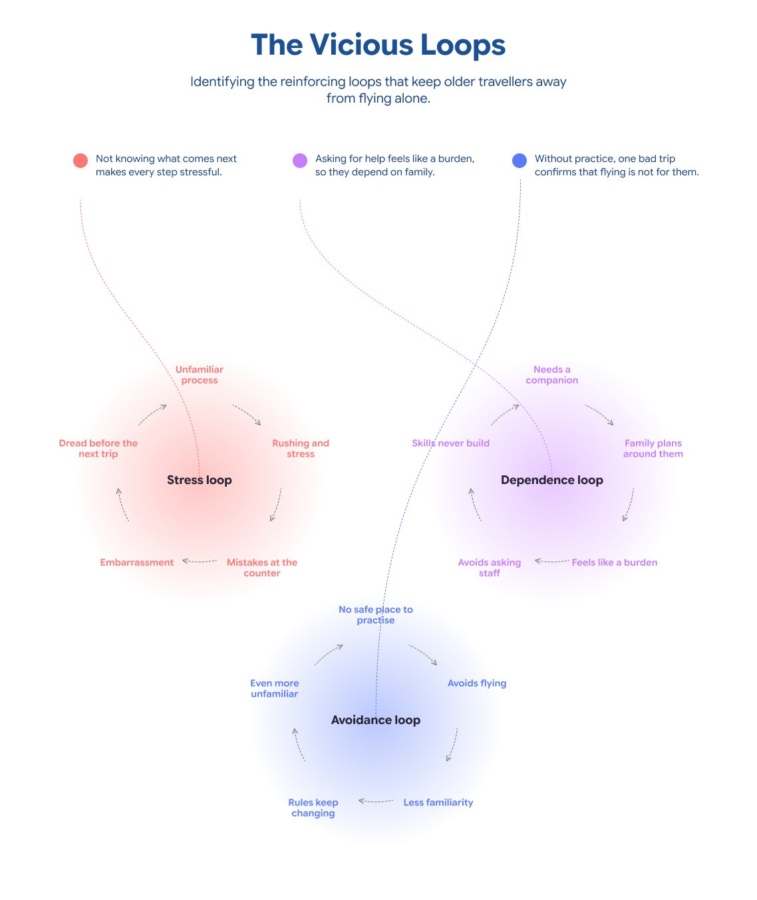
Beneath the surface
What we see at the airport, and what sits underneath.
Events → patterns → system structures → mental models: “If I get it wrong, I hold everyone up.”
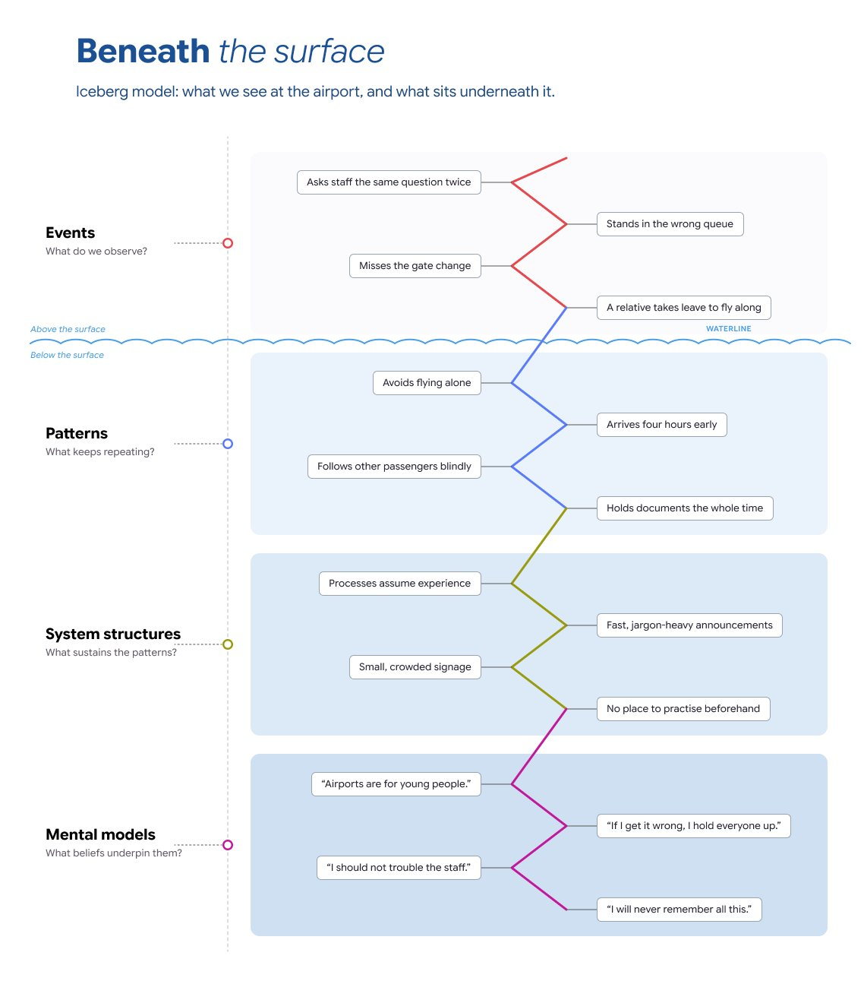
Leverage points → design brief → three ideas
Where a small change breaks the loops: rehearse at home.
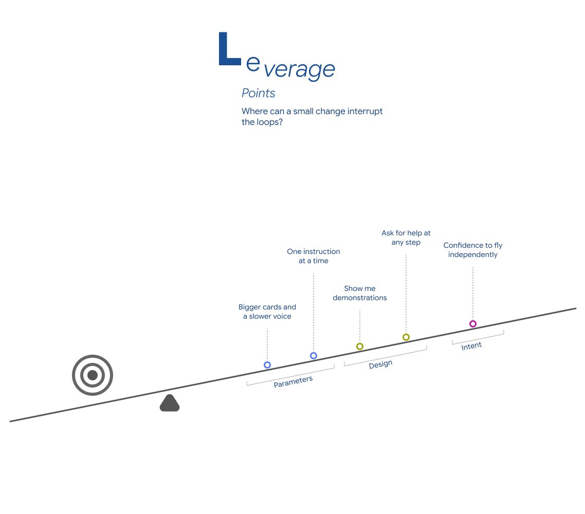

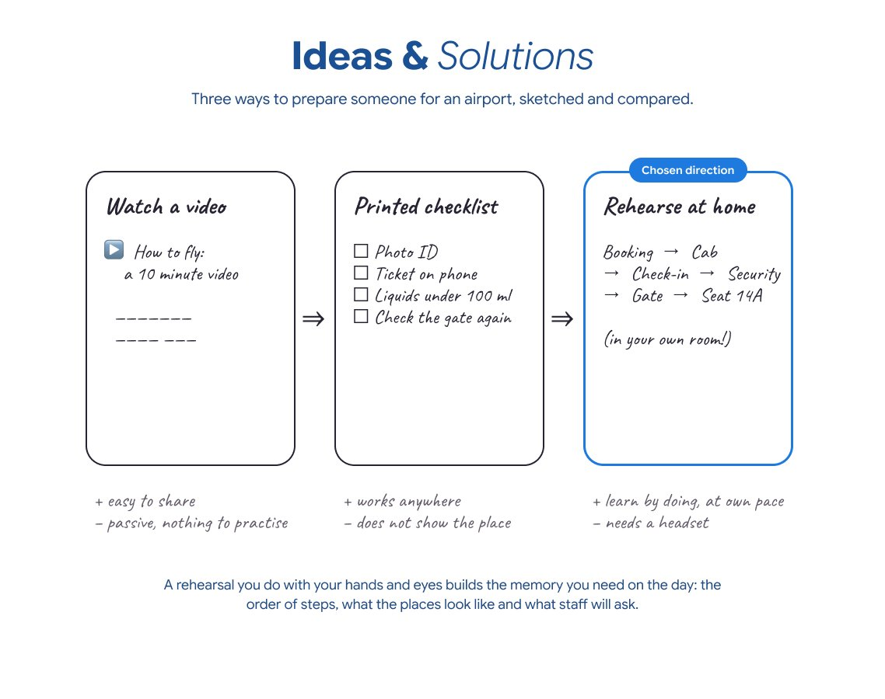
5 conversations → 3 gaps → Kamala


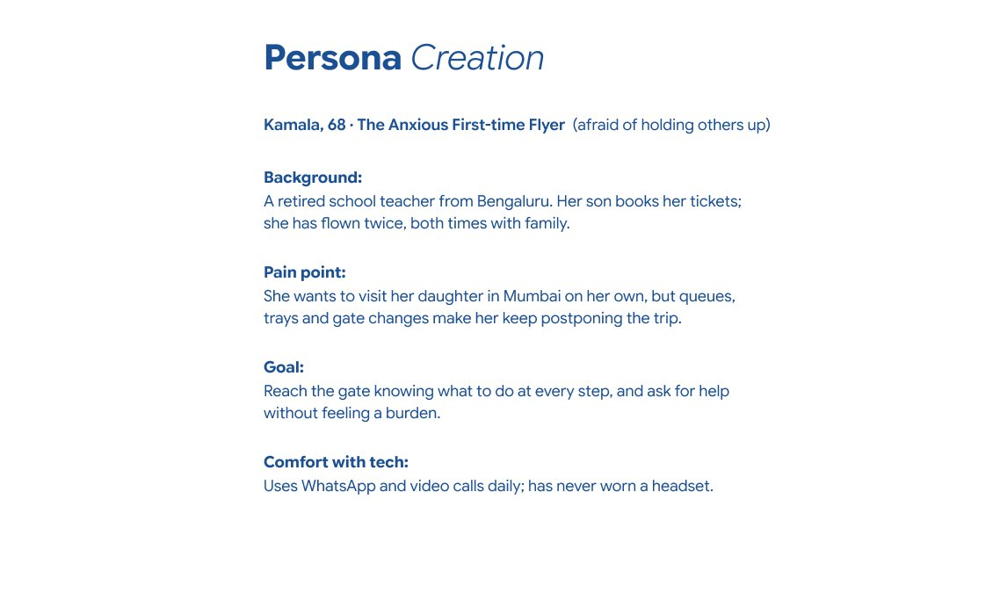

Understanding gap · confidence gap · independence gap.
Patterns → possibilities
Every problem gets an answer inside Saath.
One step, one card, one action · no timers · a calm voice, repeat any time · gentle retry, never a failure screen · Show me and Ask for help on every step.

Information architecture
One path, in the same order as a real airport.
Available on every step: Show me · Ask for help · Read aloud
The start screen
One screen, no scrolling.
Your name — printed on the booking, pass and ID; greeted aloud.
Start in mixed reality — the main path, in your own room.
Full VR · Webcam · Desktop preview — when the room is small, or there's no headset.
Watch the journey — a narrated tour of all eleven scenes.
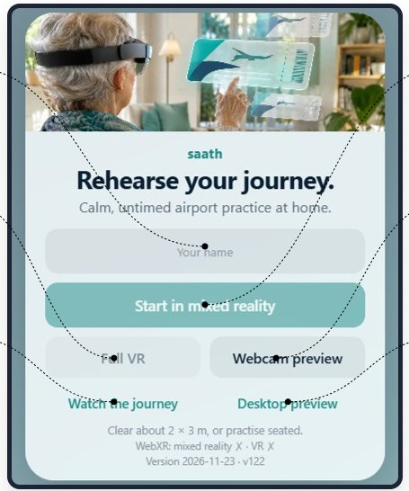
At home → getting there
Prepare in your own room, then arrive the way you will on the day.


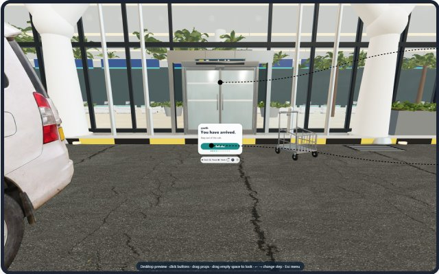

Terminal → gate → seat 14A
Check-in and security without the rush, and a gate that changes.
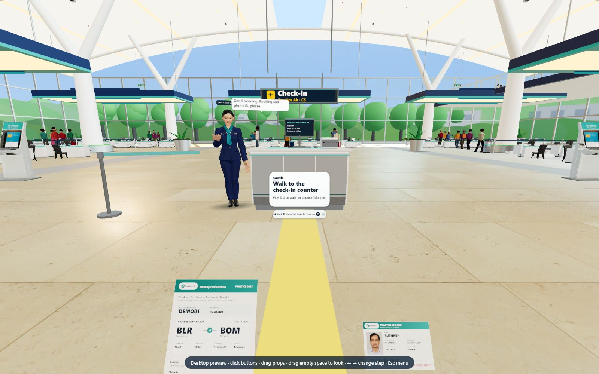


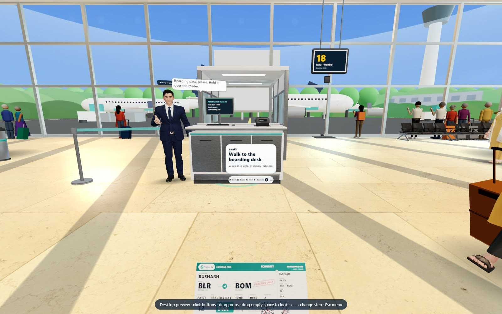

Built with
three.js + WebXR — runs in the Meta Quest 3 browser
Blender — the airport spaces and props
Figma — research boards, IA and screen flows
Recorded voice guidance — calm narration, repeat any time
Desktop & webcam preview — try it without a headset
Learning outcomes
Design for confidence, not only for ease.
Systems thinking finds the real problem. Loops and the iceberg showed it was confidence, not information.
Designing for older, first-time users. Pace matters most: no timers, one step at a time, mistakes kept private.
Prototyping XR in the browser. three.js, WebXR and Blender, tested on a headset and on a laptop.
Map the system. Then build it to learn.
Fear → understanding
The Fear Between Us
Object → world
Time Wanderers
Anxiety → confidence
Saath
Thank you.